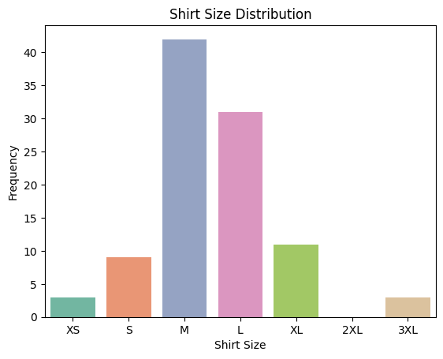
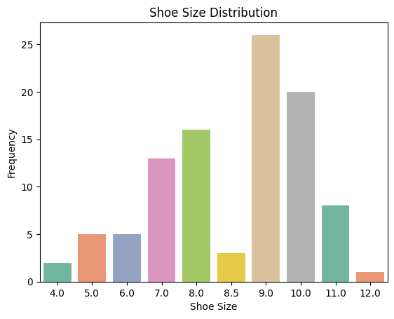
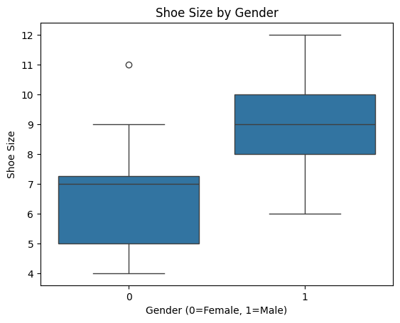
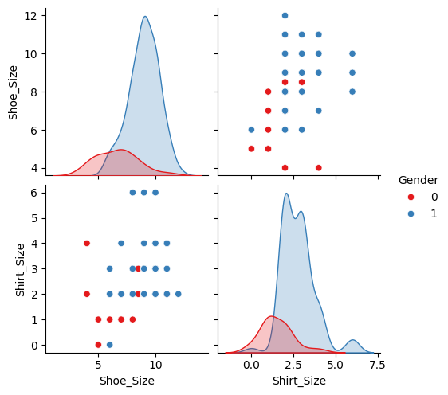
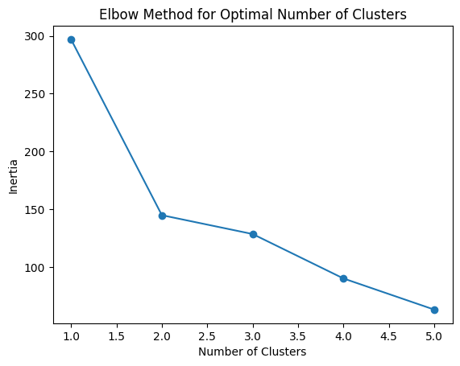
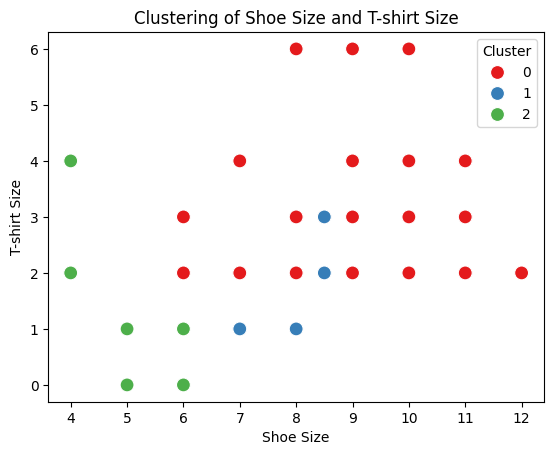
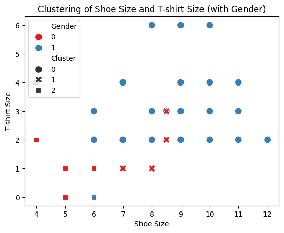

Introduction
Does Shirt Size correlate with Shoe Size? Are there gender-based differences? Let's dive into the data to uncover insights.
The Data Behind the Story
We collected data on Shirt Size, Shoe Size, and Gender from 99 participants to analyze patterns.
Exploratory Data Analysis
Shirt Size Distribution

Most participants wear M and L size shirts, with fewer in XS and 3XL sizes. This helps us understand the general distribution of shirt sizes.
Shoe Size Distribution

Shoe sizes range from 4 to 12, with the majority around sizes 8-10. This suggests a normal distribution in shoe sizes.
Shoe Size by Gender

Males generally have a wider range of shoe sizes, whereas females mostly fall within a smaller range. This suggests gender-based size variations.
Shoe Size by Shirt Size

We observe a positive trend: larger shirt sizes are generally associated with larger shoe sizes, but some variations exist.
Pairplot

The pairplot helps visualize relationships between Shirt Size and Shoe Size, revealing potential patterns and clusters.
Cluster Analysis
We applied K-Means clustering to identify natural groupings in the data.

The Elbow Method suggests that 3 clusters are optimal for segmenting our data.

The clustering visualization shows how individuals with similar sizes are naturally grouped.
Gender-Specific Clustering

When clustering by gender, we notice distinct patterns in male and female size distributions.
Key Insights
- Larger Shirt Sizes tend to have larger Shoe Sizes, but variations exist.
- Males show more variation in Shoe Size compared to Females.
- Cluster analysis reveals distinct groups with similar attributes.